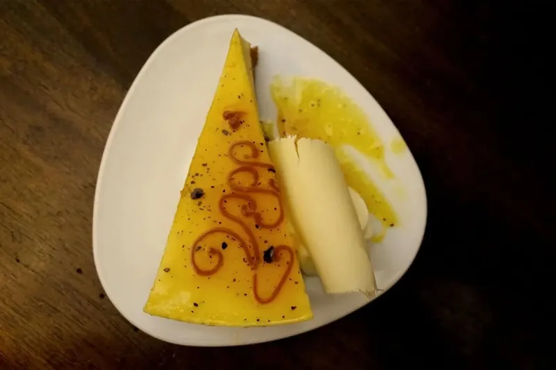
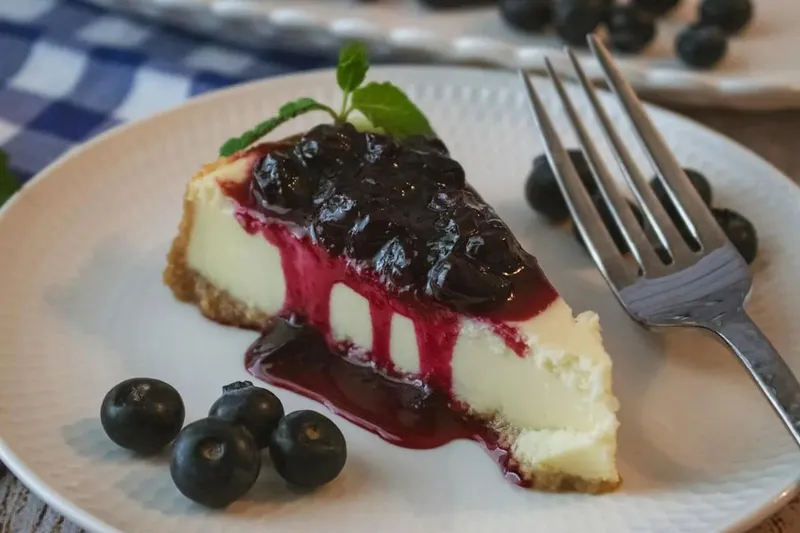
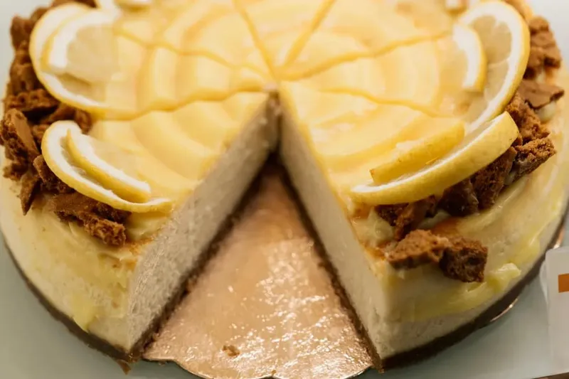
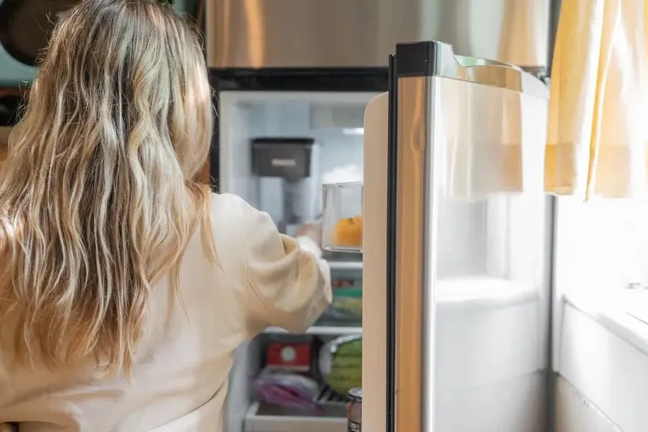
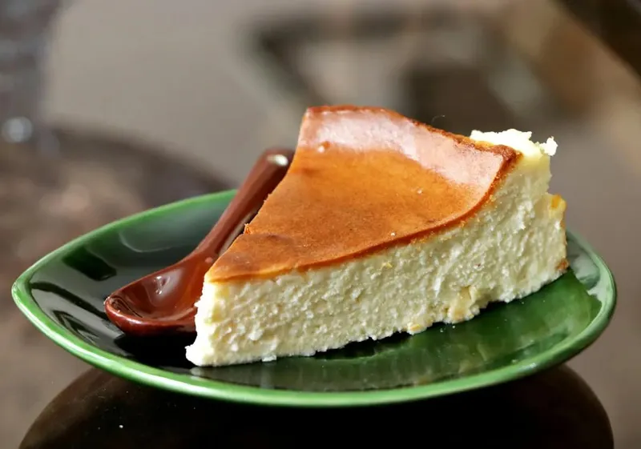
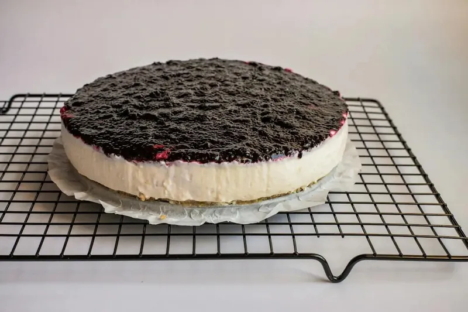
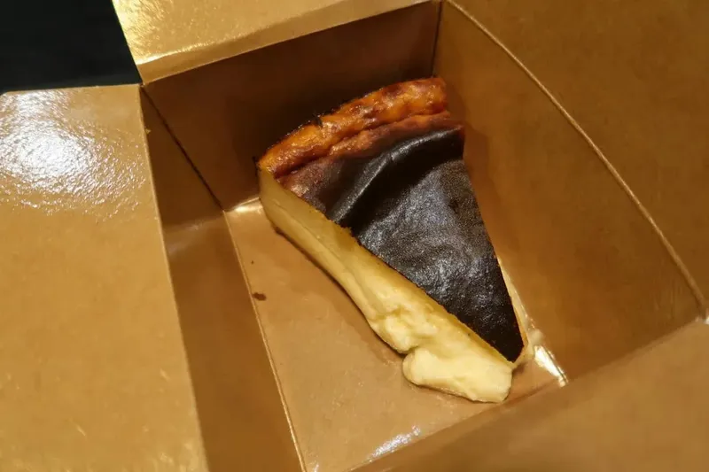
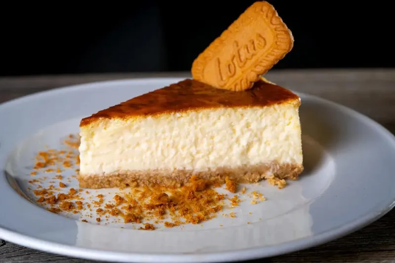

Blog
Dicas para escolher, pedir, presentear e conservar o seu cheesecake, além de receitas e curiosidades sobre o autêntico NY Cheesecake.
Em destaque
Quais bairros de São Paulo recebem o delivery de cheesecake?
Confira os bairros que recebem cheesecake delivery em São Paulo, veja como validar seu CEP, prazos, taxas e o que fazer se seu endereço ficar fora da rota.
Delivery em São Paulo
Onde pedir, quais bairros recebem, prazos e formas de pedir o seu cheesecake em São Paulo.
-
Onde pedir cheesecake em Perdizes?
Guia de cheesecake em Perdizes: descubra onde pedir, compare fatia e torta inteira, veja preços, delivery e escolha a opção certa para cada ocasião.
-
Como pedir cheesecake no 99Food em São Paulo?
Peça cheesecake no 99Food em São Paulo e saiba escolher loja, sabor, formato e acompanhar a entrega até a sobremesa chegar bem conservada.
-
Cheesecake é a sobremesa certa para o café da tarde por delivery?
Cheesecake é a sobremesa certa para o café da tarde por delivery? Descubra qual formato pedir, como chega em casa e quando vale a pena escolher.
Presentes e ocasiões
Cheesecake para presentear e para as datas especiais: Páscoa, Natal, aniversários e festas.
-
Sexta-feira Santa é feriado: como receber o cheesecake de Páscoa?
Como funciona a entrega de cheesecake no feriado de Páscoa: saiba quando encomendar, por quais canais pedir e como armazenar até o domingo.
-
Cheesecake de Natal para presentear: como enviar para o endereço de quem recebe?
Envie cheesecake de natal para presente em São Paulo: escolha sabores, embale, conserve e entregue no endereço certo, com dicas de prazo e custo.
-
Onde comprar torta de cheesecake inteira para festa em São Paulo?
Torta de cheesecake para festa em SP: descubra tamanhos, rendimento por convidado, sabores, preços e onde encomendar a inteira com entrega.

Tamanhos, sabores e preços
Qual tamanho e qual sabor escolher, fatia ou inteiro, e quanto cada opção rende.
-
Quais sabores de cheesecake uma pizzaria deve oferecer para vender mais?
Escolha os sabores de cheesecake para pizzaria que mais vendem: critérios de público, sazonalidade, giro, precificação e testes no cardápio.
-
Cheesecake inteiro vem com calda separada?
Por que um cheesecake inteiro com calda separada chega assim? Entenda como montar, dosar a cobertura, conservar cada parte e servir sem errar.

-
Qual sabor de cheesecake escolher para o café da tarde?
Qual sabor de cheesecake para café da tarde combina com cada perfil? Veja como acidez, doçura e textura guiam a escolha certa e harmonize com bebidas.
Conservação e dicas
Quanto tempo dura, como guardar na geladeira e no freezer e como descongelar.
-
Como conservar cheesecake inteiro na geladeira sem estragar
Aprenda como conservar cheesecake inteiro na geladeira e mantenha textura, sabor e aparência intactos até a hora de servir cada fatia.

-
Quanto tempo leva para descongelar um cheesecake inteiro?
Descubra quanto tempo para descongelar cheesecake inteiro conforme tamanho e método, e sirva na textura certa sem rachar nem errar na hora.

-
Fatia de cheesecake no freezer: por quanto tempo posso guardar?
Fatia de cheesecake no freezer por quanto tempo guardar? Veja prazos por tipo, como congelar e descongelar sem perder o creme e sinais de que passou do ponto.

Receitas e curiosidades
Receitas, diferenças entre os tipos de cheesecake e o que faz um NY Cheesecake ser autêntico.
-
Cheesecake com gelatina ou assado: qual a diferença?
Cheesecake com gelatina ou assado: compare textura, sabor, tempo e dificuldade e descubra qual método escolher para cada ocasião e acertar.

-
Como saber se o cheesecake é de qualidade: o que observar
Aprenda como saber se o cheesecake é de qualidade: avalie textura, sabor, ingredientes e sinais de frescor antes de comprar e acerte na escolha.

-
Cheesecake com base de biscoito ou massa: qual escolher?
Compare base de biscoito e massa no cheesecake: textura, sabor, preparo e ocasião ideal para escolher a melhor opção e acertar na receita.
